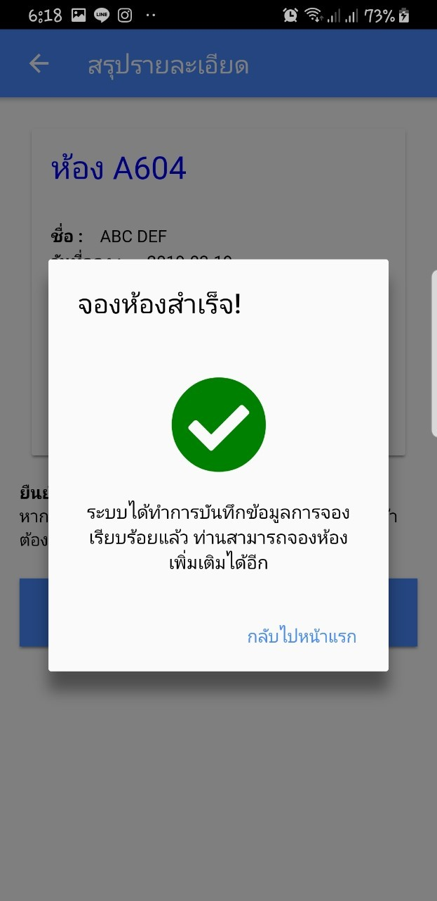
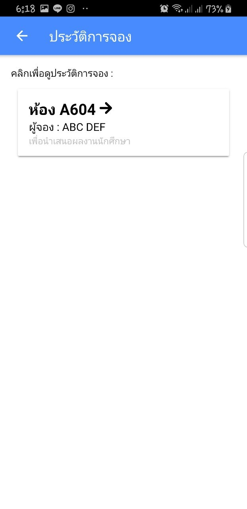

วิธีการใช้ระบบจองห้อง
ขั้นตอนการจองห้อง
1. เลือกห้องที่ต้องการ
2. ศึกษากฏการใช้ห้อง
3. เลือกวันและเวลาที่จอง
4. เติมรายละเอียด
5. ยืนยันเวลาจอง
 1.การเลือกห้องจอง
หลังจากที่ login แล้วคุณสามารเลือกห้องแล้วดูสถานะของห้องในปัจจุบันได้
1.การเลือกห้องจอง
หลังจากที่ login แล้วคุณสามารเลือกห้องแล้วดูสถานะของห้องในปัจจุบันได้
กดปุ่ม "จอง" เพื่อเริ่มจอง
 2.กฏระเบียบและอุปกรณ์
คุณสามารถดูกฏและระเบียบได้ในหน้านี้
2.กฏระเบียบและอุปกรณ์
คุณสามารถดูกฏและระเบียบได้ในหน้านี้
รวมไปถึงอุปกรณ์ภายในห้องที่สามารถใช้ได้

 3.การจองเวลา
ใส่วันที่ต้องการจองแล้วเลือกเวลาในช่องด้านล่าง
3.การจองเวลา
ใส่วันที่ต้องการจองแล้วเลือกเวลาในช่องด้านล่าง
แล้วกดปุ่ม "ถัดไป"
 4.คำบรรยายเพิ่มเติม
อธิบายเหตุผลคล่าวๆถึงการจองห้องในครั้งนี้
4.คำบรรยายเพิ่มเติม
อธิบายเหตุผลคล่าวๆถึงการจองห้องในครั้งนี้
แล้วกดปุ่ม "ถัดไป"
 5.หน้ายืนยัน
จะเป็นการย้ำถึงวันเวลาที่จอง
5.หน้ายืนยัน
จะเป็นการย้ำถึงวันเวลาที่จอง
กดปุ่ม "ยืนยันการจอง" เพื่อเริ่มจอง
กดปุ่ม ย้อนกลับด้านบน เพื่อย้อนกลับไปเลือกวันและเวลาใหม่

6.จองห้องสำเร็จ
กดปุ่ม กลับไปหน้าแรก เพื่อทำการจองอีกครั้ง

ประวัติการจองห้อง
สามารถดูประวัติการใช้ห้องได้ โดยคลิกที่ปุ่ม ประวัติการจองห้อง
ที่หน้าป้อนชื่อผู้จอง
ผู้จัดทำ
นาย ณัฐวุฒิ บุตรพันธ์
นางสาว นงณภัส จิรัฐพล
นายชุติภาส บ่อทรัพย์
นาย กันต์ธีร์ เจริญเศรษฐศิลป์
นายวิชญ์พล อุยะนันทน์
นายธรรมวิทย์ พรใบหยก